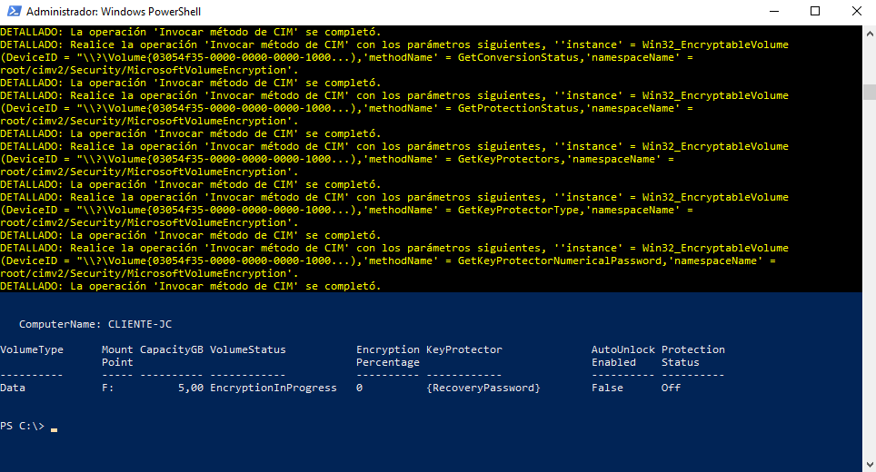
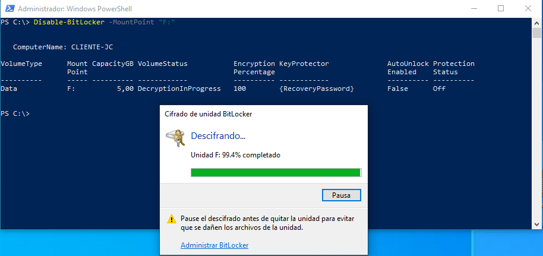
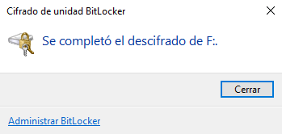
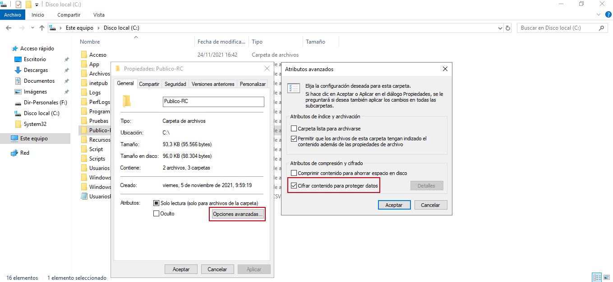
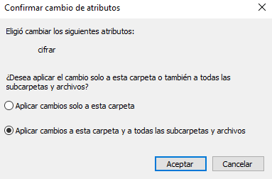

6.2.1. Bitlocker (Windows) y EFS
1. Introducción
El cifrado nos permite proteger los datos de los dispositivos para que solo puedan acceder a los mismos personas con autorización. En sistemas Windows se tiene dos posibilidades: BitLocker y EFS.
Por ejemplo BitLocker se usa para cifrar todo el disco en unidades fijas de disco duro o bien en externas, mediante BitLocker To Go. Sin embargo EFS, se usa para proteger los archivos individuales de las unidades de forma individual para cada usuario.
2. BitLocker
El cifrado de unidad BitLocker es una característica de los sistemas Windows que permite la protección de datos y soluciona las amenazas de robo o exposición de datos de equipos perdidos, sustraídos o retirados inadecuadamente.
BitLocker ofrece la máxima protección cuando se usa con un módulo de plataforma segura (TPM) 1.2 o posterior.
Las siglas TPM vienen del nombre Trusted Plataform Module (Módulo de Plataforma de Confianza). Este chip es un criptoprocesador seguro, que sirve para almacenar las claves de cifrado de Windows y proteger así la privacidad de tus archivos más sensibles.
TPM es un componente de hardware instalado en muchos equipos nuevos por los fabricantes de equipos y puede funcionar con BitLocker para ayudar a proteger los datos de usuario y para garantizar que un equipo no se haya manipulado mientras el sistema estaba sin conexión.
Una de las aplicaciones prácticas del uso del cifrado de unidades de disco es la protección del equipo perdido o robado por medio de:
- Un acceso no autorizado.
- Mediante la ejecución de una herramienta de ataques de software contra ellos.
- Mediante la transferencia del disco duro del equipo a otro equipo.
Fuente: Microsoft
BitLocker no está disponible en la edición Windows 10 Home.
BitLocker cifra volúmenes enteros, es decir, puede cifrar todo el disco duro o simplemente una parte de él. Utiliza un algoritmo de cifrado AES en modo CBC con una clave de 128 bits.
Para que BitLocker sea capaz de funcionar y por tanto sea efectivo, se requieren dos particiones NTFS:
- Una que contendrá el sistema operativo.
- Otra con tamaño mínimo de 100 MB, donde se alojará el sistema de arranque. Este volumen de arranque permanecerá sin cifrar y, por tanto, no debe utilizarse para almacenar ningún tipo de información valiosa.
2.1. Habilitar BitLocker con Powershell
PS C:\ Enable-BitLocker -MountPoint "F:" -RecoveryPasswordProtector -UsedSpaceOnly -Verbose

Figura 1. Salida del comando de habilitación de BitLocker en el disco F:\.
El comando Enable-BitLocker, tiene los siguientes parámetros:
- [-MountPoint] <String[]>
- [-EncryptionMethod <BitLockerVolumeEncryptionMethodOnEnable>]
- [-HardwareEncryption]
- [-SkipHardwareTest]
- [-UsedSpaceOnly]
- [-PasswordProtector]
- [[-Password] <SecureString>]
- [-WhatIf]
- [-Confirm]
- [<CommonParameters>]
2.2. Deshabilitar BitLocker con Powershell
PS C:\Disable-BitLocker -MountPoint "F:"
Como se puede apreciar en la imagen inferior, el proceso de descifrado del disco, lleva un tiempo.

Figura 2. Salida del comando de deshabilitación de BitLocker en el disco F:\.

Figura 3. Fin del proceso de descifrado del disco F:\.
El comando Disable-BitLocker, tiene los siguientes parámetros:
- [-MountPoint] <String[]>
- [-WhatIf]
- [-Confirm]
- [<CommonParameters>]
3. EFS (Encrypted File System)
EFS es una herramienta que nos permite cifrar archivos y carpetas. Es especialmente útil cuando se tratan de archivos que están disponibles en red para varios usuarios.
La particularidad de este sistema es que está conectado al usuario, no al ordenador. En consecuencia, más de un usuario podrá cifrar sus archivos al mismo tiempo, sin el riesgo de que otros puedan tener acceso.
Con EFS la clave de cifrado de los archivos se almacena en un dispositivo de almacenamiento flash, por lo que se convierte en un método vulnerable, además, el contenido de los archivos cifrados puede verse expuesto en los registros de los archivos temporales de Windows.
Activar o desactivar EFS Windows 10 desde CMD
Para realizar la activación/desactivación de EFS, hay que acceder a la consola cmd como administrador y ejecutar lo siguiente.
Para desactivar EFS:
C:\fsutil behavior set disableencryption 1
Para activar EFS:
C:\fsutil behavior set disableencryption 0
Nota: Es necesario reiniciar el sistema para aplicar los cambios.
Esquema de funcionamiento
EFS utiliza el método de cifrado simétrico para encriptar los archivos, aunque también hace uso de un algoritmo simétrico denominado DESX. Este algoritmo es una variante del DES. El objetivo principal de este algoritmo es aumentar la dificultad de ataques que buscan descifrar datos como los de brute-force (fuerza bruta).
Funcionamiento
Como ejemplo, para cifrar la carpeta Publico-RC de un equipo Windows, simplemente hay que activar la casilla 'Cifrar contenido para proteger datos'.

Figura 4. Activar el cifrado EFS en un directorio.
A continuación, hay que hacer clic en Aceptar y al volver a la pestaña General, hay que pulsar el botón Aplicar. Aparecerá una ventana que preguntará si se quiere cifrar únicamente la carpeta o también a las subcarpetas y archivos. Una vez que se seleccione esa opción, hay que hacer clic en Aceptar.

Figura 5. Aplicar cambios a la carpeta y subcarpetas.
4. Referencias
- [Comparativa entre las características de ambos y elegir el más adecuado según las necesidades -Comparativa EFS y BitLocker]
- BitLocker - Microsoft
- Activar el cifrado de dispositivo
- Cifrado de dispositivo en Windows 10
- Encontrar la clave de recuperación de BitLocker en Windows 10
- Cómo cifrar archivos en Windows 10 de una manera sencilla.
Obra publicada con Licencia Creative Commons Reconocimiento No comercial Compartir igual 4.0